← 返回阅读库 · 原论文目录
论文讲解阅读文档 · 表征学习 · v164
GENESIS: Generative Scene Inference and Sampling with Object-Centric Latent Representations
视频时长 00:14:13；讲解文字 6,661 字符；提取讲解画面 32 张。按视频原顺序阅读，每段文字保留时间戳。
文字来自整段视频的自动语音转写，按自然停顿分段，并与 PPT / 论文页面 / 演示画面对齐。未将讲解压缩为摘要；术语、数字和口述公式请结合画面及原论文核对。 阅读稿已校正规范部分明确术语误识别；原始逐字稿和每处修改记录另行保留。
讲解画面为源视频截图（640×360），不是可编辑 PPT 文件。全片按每秒 2 帧扫描内容变化，逐步展开页保留；连续动画保留代表画面。清晰度受源视频限制。
下载完整资料包 · 含离线 HTML、PDF、Word、全部 PPT 画面和字幕。
原论文与材料
GENESIS: Generative Scene Inference and Sampling with Object-Centric Latent Representations · 下载完整 PDF（17 页）
按时间阅读
00:00:00–00:00:51 · 画面 001
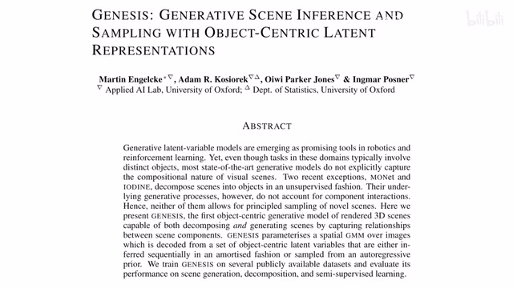
00:00:00–00:00:51 · 画面 001大家好啊今天我们来快速出一篇论文 genesisgenerative scene inference and samplingwith object-centric latent representations 那这篇文章呢跟我们之前介绍的这个 monet还有这个 IODINE 这个两个有着非常密切的关系都是做这个 object centric 的 representation 同时区别于之前的两个工作呢之前呢我们只是把重心放在了这个 scene decomposition 也就是一张图进来我们想把它分成不同的 object 然后用 representation 去表示它们就 ok 了那么在这篇工作里面呢除了上述的这个 segmentation 对这个 object centric 这些 representation 的这些学习那本文呢还强调一个这个 generative
啊去根据我们的这个 representation 去生成我们一张新的图像那这个呢是本文的这个核心的贡献那么简单一个快速的回顾啊想 ve 对吧这个 representation 这个 decoder 出来这个图像 monet 呢是我们因为有 k 个 object 吗出一个 mask 然后找到一个 object 然后呢在上一个 mask 跳剩下来这个图上再出一个 mask 再找一个 object
00:00:51–00:02:21 · 画面 002
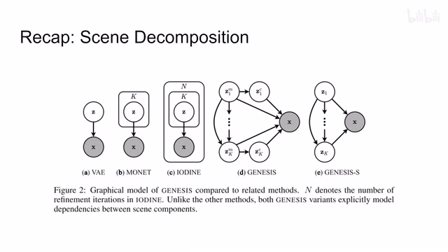
00:00:51–00:02:21 · 画面 002对吧一共找到 keg object 每个 object 呢都有一个 latent representation 这个 z 去表述最后呢用这个 softmax 把整个这个 keg object 连着他们的这个 mask 一起呢重建出我们原始图像了那这个 IODINE 呢跟这个 monet 有一点不同就是虽然我们也是 keg object 但是呢这个 keg object 是同时给它做预测划分出来的当然你第一次的划分呢可能它的结果不那么好所以呢对于每个 object 自己来说呢它会循环 n 次去不断的这个迭代这个最后的这个出来的结果对吧这是这个 n 的这个意思那么本文的这个 genesis 呢在它这个运行的这个结构上来说呢跟这个 monet 更为相似只不过呢本文呢明确的指出了我们不同 object 之间它们这个 mass 的这个 latent code 它们之间存在的
它们之间存在一个这个 condition 就是上一个 object 是下一个 object 的这个 condition 这么一个关系而这个 monet 里面呢只是很简单的把上一个这个 mask 给它扣去这样子那这个呢是本文区别于这个 monet 最重要的地方那么下面我们就来看本文的整个这个数学的表述吧那首先输入的图像对吧一个 xHWC
00:02:21–00:04:21 · 画面 003
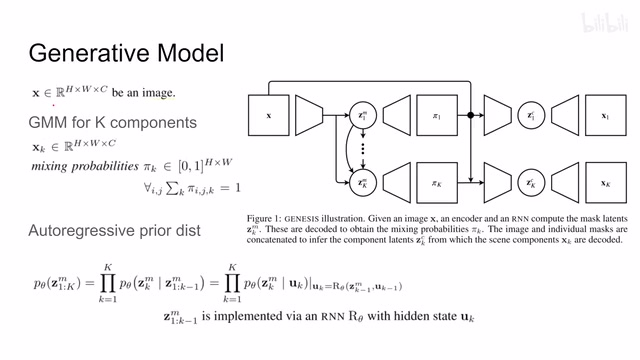
00:02:21–00:04:21 · 画面 003同样的我们依然维持这个混合高斯的这个假设对吧我们假设有 k components 每个 components 呢我们可以用一个混合高斯模型来去描述它们那每个 object 对吧首先我们也是用图像形式给它表达出来同时呢这个 object 不是图像的全部对吧我们还是有一个这个 mask或者这里呢叫这个 mixing probabilities 其实就是每一个不同 object 在这个像素位置上的这个权重嘛相当于规定了你这个 object 在图像中的哪一块这么一个 mask 那么既然它是一个概率嘛对于这个 keg object 它的这个核就应该是 1 那这个都是很直观的定义了那当然我们之前说了我们用这个混合高速模型去表达这个 keg object 那这个混合高速模型呢这个里面的这个参数呢比如说这个均质方差呢对吧他们呢都描述在这个 z 里面
对于这个拍这个 mask 他的表达呢啊我们叫他这个 z 上标这个 m 那么对于这个 object 他的表达呢就是这个 z 上标 c 啊这个呢是一开始的一些基础的描述那么有了这个之后我们现在就开始来写他们之间的关系了。那本文呢认为我们的这个 decomposition 或者说是 generative 整个这个过程呢也是一个这个 auto-regressive 的过程。那 auto-regressive 呢本质上就是我先生成一部分然后呢把生成的这一部分作为条件，基于这个条件之上我再去再生成另一部分啊，不断的循环。那所以你看到这里呢，我们这 k 一个这个 object 的 mask 的这个 latent 这个 z 它是怎么出来的呢
那对于一个小 k 来说，它所基于的条件呢就是从第一开始第一个这个 latent 一直到 k-1 个 latent 这些所有的 latent 啊，都是作为这个 k 的生成的这个条件。然后呢，因为我们每次生成一个 object 的时候呢，每次生成这个 object mask 的时候呢，我们都认为它是一个相互独立的这个事件，所以呢当然我们就可以把这些概率给盛起来
00:04:21–00:04:51 · 画面 004
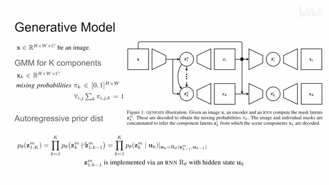
00:04:21–00:04:51 · 画面 004这里相当于把每一个 Mask 它们 Latent 之间的关系就给它表达出来了。实际上我们用的是任何你喜欢的一个 RNN 对吧？比如说这里作者用的 LSTM，它有一个 Memory U因为这个 memory 呢就相当于记录了从 1 到 k-1 这些 latent 他们这些信息。那基于这个 memory 呢你就可以把它这个这个 k 的这个关于 mask 的 latent 给它表示出来了。那这个呢就是落实到我们具体的模型的这么一个表达。那么再往下呢，跟 MONet 一样，我们有这个 mask 的它的这个 latent 根据我们 decoder 出来我们一个 mask 真正的这个图像尺寸的这个 mask，然后呢结合我们这个原图就可以针对这个 object
00:04:51–00:05:09 · 画面 005
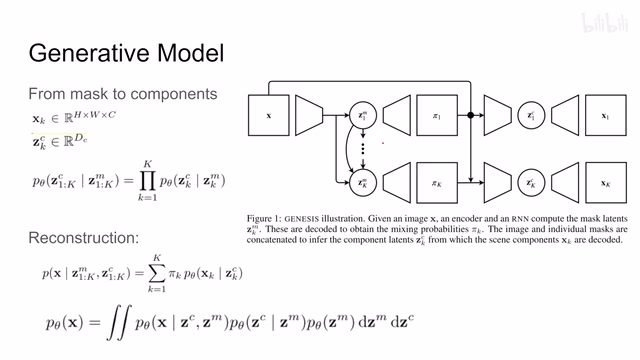
00:04:51–00:05:09 · 画面 005来提他的 feature 啊，再对他进行重建等等等等这些东西，我们还是有这个 encoder 对吧，提这个图像 feature 提出来这个 latent。那么这个 latent 呢，因为结合了这个 mask 的信息，结合了原图的信息，而这个 mask 的信息呢，又是根据这个 latent 这个 zm 他出来的。所以呢，你可以说这个 zc 是根据这个 zm 啊他过来的，所以他们之间有一个这个 condition。那这个呢写出来那就是这个样子
00:05:09–00:05:10 · 画面 006
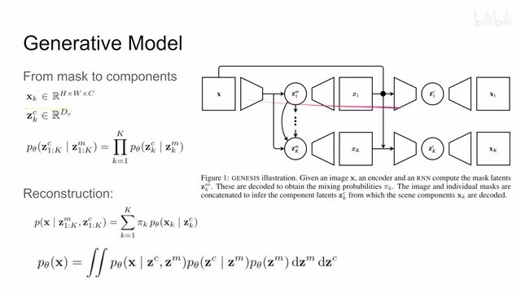
00:05:09–00:05:10 · 画面 00600:05:10–00:06:22 · 画面 007
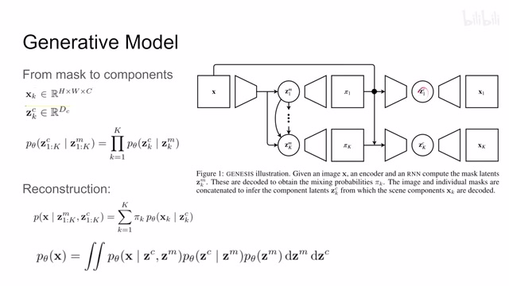
00:05:10–00:06:22 · 画面 007那同时呢，还是你从这个 ZM 到 ZC 这 Key Object 他们生成的过程是相互独立的，所以呢你可以用这个独立事件对吧，这个乘法把它们乘起来。那么有了这个 ZC 呢，你就可以做重建了嘛，比如说这个 ZC1 重建出来就是这个 X1。那你仔细想想，ZC1 是根据这个 ZM1 来出来的，所以你说这个 X1 呢，它的 condition 呢就应该是 ZC1 和这个 ZM1。那么写出来呢就是这个样子然后呢，我们还是把这个 kickobject 给它根据它们的这个 mask 给它合成起来，合成这个原图嘛对吧，就是直接加权的这个求和就可以了。那我们把这些下标省略出来，这个原图呢实际上是 condition 的这个 zc 和这个 zm。然后呢，这个 zc 呢本质上是 condition 的这个 zm。那最后呢都落到这个 zm 上面啊就可以了。那这个呢就是我们的一个 prior
00:06:22–00:06:28 · 画面 008
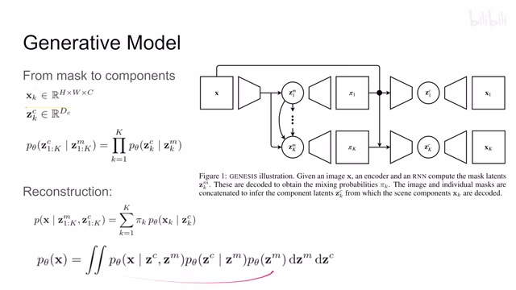
00:06:22–00:06:28 · 画面 008就是我们感受到这个抽象意义中呢，有这么一个 ZM 它可以控制我们整个这个图像。那如何控制呢，就是整个这样一个流程。那么此外呢，这里我们既然说到了这个 Mask 这个 Mask 呢怎么混合起来呢，其实也是可以有很多个设计的。比如说你可以把每个像素上的这个概率的混合呢理解成是一个折报的这么一个过程。你看到第一个这个概率呢就是第一个嘛对吧，没有什么问题
00:06:28–00:06:31 · 画面 009
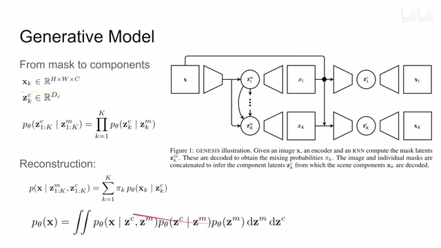
00:06:28–00:06:31 · 画面 00900:06:31–00:06:38 · 画面 010
00:06:31–00:06:38 · 画面 01000:06:38–00:07:47 · 画面 011
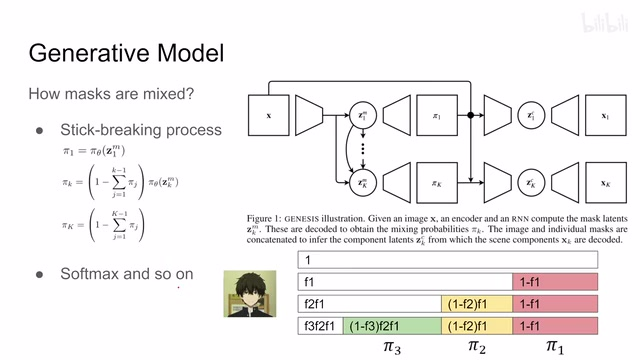
00:06:38–00:07:47 · 画面 011那么 dk 个呢就是 1 减去了前面的 k 减一个这些概率之后，然后呢再根据当前的这个 k 的这个 latent 再做出来的。那最后一个呢就是剩下的所有。那这个过程呢就是你看到这里对吧，一开始对吧，然后第一个第二个第三个每一次执行的时候呢都是从这个白色区域里面根据自己的 latent 哎给他画出一部分来。那最后剩下的那个就是最后的一个，那这个呢是一个可取的设计当然你也可以简单一点像这个 modex 一样你就用一个 softmax 把所有的这这个 mask 都给它组合起来也是可以的这个呢只是一个设计的取舍那此外呢作者还探究了说既然我们这个 zc 是基于这个 zm 的反正呢你们都是一种 latent code 对吧那我是否可以把这个 zc 和这个 zm 合成一个我直接用一个 latent 这个 z 去表示我们的 mask 去表示我们重建出来这个 object 这样能不能行呢
00:07:47–00:08:14 · 画面 012
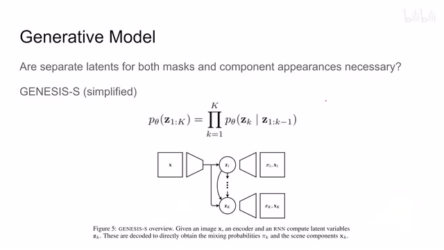
00:07:47–00:08:14 · 画面 012那这里呢就是作者提出的这个 genesis s 也就是 simplified 的意思也就是说我这里只维持一个 z 一个 latent 然后呢根据这个 latent 去生成这个 mask 去生成这个 object 这是这个 genesis s 那到这里呢我们这个前向的模型从这个 prior 从这个非常抽象的这个 latent representation 到我们实际的图像这么一个模型我们已经构建好了也就是我们这个 generative mode 下面呢我们就要开始考虑怎么样根据我们这个图像把我们的这个 abstract 这个 latent 这个非常抽象的这个高层的这个语义的这个 latent 给它解出来我们该怎么样去估计这个 posterior 只能从这个图像来去反推我们这个 latent 怎么办呢预示不绝一个神经网络对吧这里呢我们就假设我们的这个 posterior 它是这个 q
00:08:14–00:09:35 · 画面 013
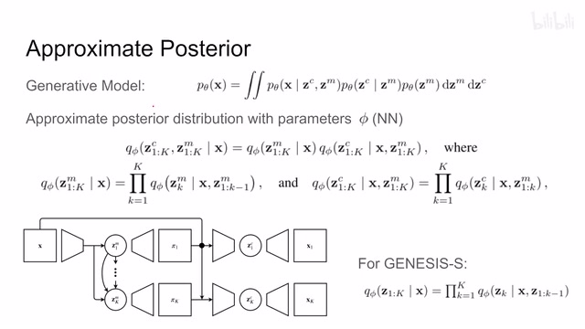
00:08:14–00:09:35 · 画面 013然后呢这个 q 的有一个参数这个 phi 这个 phi 呢就代表我们的这个各种神经网络那既然呢是这个 posterior 对吧我们的这个 condition 呢就变成了这个 x 就是我们的这个图像那我们希望呢解到关于这个 mask 的 latent 关于这个 object 的 latent 啊这个呢是这个 posterior 那么根据解的条件战略嘛我们就可以把它拆开嘛拆成这个样子那同时呢因为还是这 k object 他们是相互独立的对于其中的每一个这个 posterior 来说呢我们一样可以拆成 k 个这个相乘的形式同时你还记得它是一个 auto regressive 这个 k 是基于从 1 到 k-1 这些 latent 的时候的产生的所以呢你看到它写成这个样子那么这样子呢我们这个 posterior 就建立起来了那当然对于我们那个 genesis s 来说呢因为它只有一个 latent 所以它写下也很简单了对吧就是这个 auto regressive 这么一个形式那么下面呢我们就要开始想办法去训练这个 neural network
00:09:35–00:10:06 · 画面 014
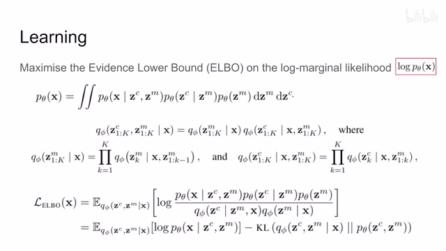
00:09:35–00:10:06 · 画面 014怎么搞这个事情呢再次回到我们的 vae 拿出我们这个 evidence lower bound 对吧 elbo 那本质上呢我们就希望我们的这个生成式的模型它生出来的这个 x 的 distribution 呢跟这个实际的样本中的 distribution 相吻合对吧就是把我们的这个 likelihood 给它最大化这个生成模型呢我们写过了对吧他的 posterior 后验呢我们也写过了这个 elbo 怎么出来呢跟我们这个做 vae 的时候一样我这里偷过来啊直接就把之前这个 vae 的这个搬过来了那其实本质没有差别左边是我们的 generative model 右边呢是我们的这个 posterior 一个是 encoder 一个是 decoderx 呢还是我们输入图像唯一的区别呢就是这个 z 原来呢我们是只有一个 latent 就 vae 里面只有一个 z 的情况
00:10:06–00:11:04 · 画面 015
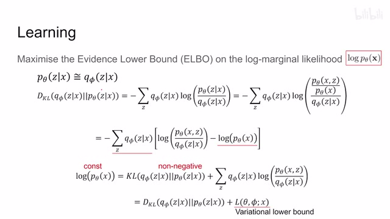
00:10:06–00:11:04 · 画面 015那这里呢我们是系有这个 mask 的这个 latent 这个 Zm 又有这个 object 的 latent 这个 Zc 所以呢在本文中的情况呢应该是个 Z 呢是包含 Zm 和 Zc 的其实就这一点小改动那么还是我们希望两个 Z 对标准尽量接近嘛我们接近 KL divergence 那还是根据定义这一串操作操作下来把这个 log likelihood 的单独拿出来因为它是一个常数跟我们的这个数据集有关这个 KL divergence 嘛这里呢因为它肯定是个非负的嘛然后这边呢是个常数
我们为了减小这个 KL divergence，我们只能提高这个部分，这个部分呢就是我们的这个 variation 的 lower bound，就是这个 ELBO。那同理呢，根据 ELBO 的定义呢，我们这里做变形，变形成这个样子，那它呢其实就是这个对吧，但只不过是因为我们这里有两个这个 latent 的这个 Z，所以呢，你可以看到这个地方
00:11:04–00:11:09 · 画面 016
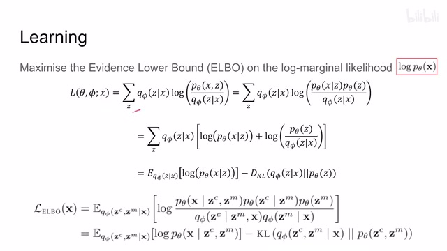
00:11:04–00:11:09 · 画面 01600:11:09–00:11:10 · 画面 017
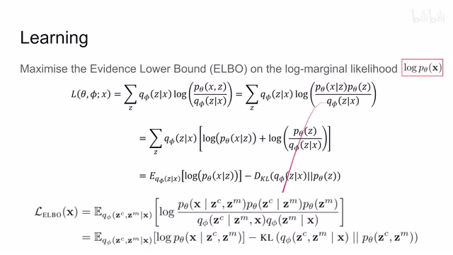
00:11:09–00:11:10 · 画面 01700:11:10–00:11:34 · 画面 018
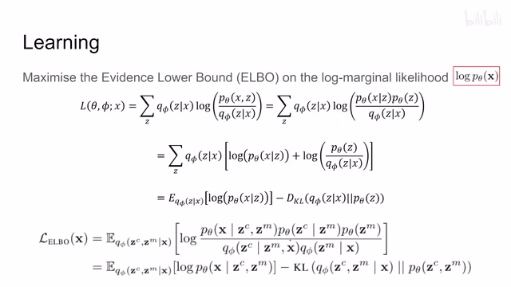
00:11:10–00:11:34 · 画面 018略有小的区别，我和这里有点小的区别，但是本质上一样的。你根据它化解出来一个 reconstruction 加 KL divergence，根据它一样的也是一个 reconstruction 一个 KL divergence。那么有了它之后呢，你就可以根据这些东西，一个是 reconstruction loss，一个是 KL divergence，用你喜欢的这个 loss 去做就好了。加上我们是假设的这个 Gaussian distribution，有很多方便的这个数学特性可以让我们使用这个，你就按照 VAE 做来好了
00:11:34–00:11:35 · 画面 019
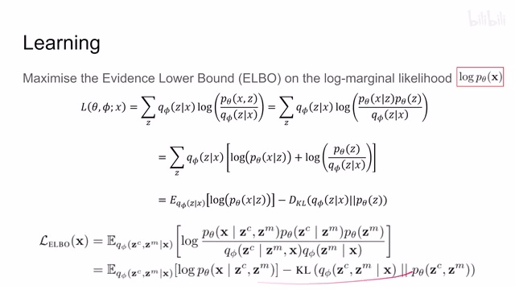
00:11:34–00:11:35 · 画面 01900:11:35–00:11:47 · 画面 020
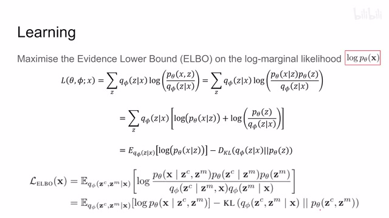
00:11:35–00:11:47 · 画面 02000:11:47–00:12:19 · 画面 021
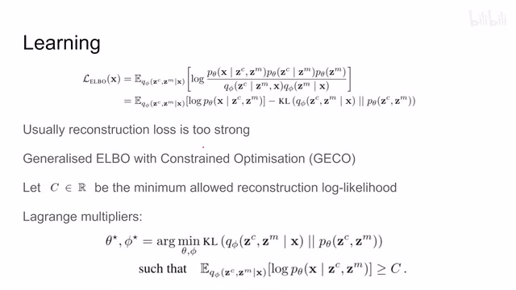
00:11:47–00:12:19 · 画面 021但是在实际运行中呢，做着发现对吧，通常来讲呢，我们这个 construction loss 它会很强，它会把我们的这个 KL divergence 给它带偏，让我们解出来这个 latent 呢并不符合我们期望的这个 gaussian distribution。那怎么办呢，一种解法就是很简单的增加它的权重嘛，增加这个 KL divergence 权重嘛，这个就是我们之前说的这个 beta VAE。那另一种呢就是这个 Generalised ELBO with Constrained Optimisation，那就是说我们保证这个 construction 这个 loss
它小到一定范围差不多得了对吧这个一定范围呢叫做 c 然后呢请出我们这个拉格朗日来把整个这个 maximize 的这个过程给它变换到 minimize 这个 KL divergence 同时呢只要我们的这个 reconstruction 这个 loss 啊差不多啊差不多就得了这么一个形式啊这个呢是这个这个 GECO 好的那么以上我们就解决了从这 generative model 啊一直到怎么训练它这个过程啊这个呢就是本文这个 genesis
00:12:19–00:12:20 · 画面 022
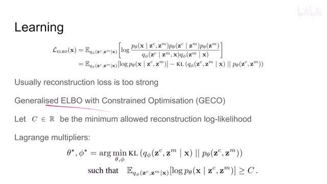
00:12:19–00:12:20 · 画面 02200:12:20–00:12:26 · 画面 023
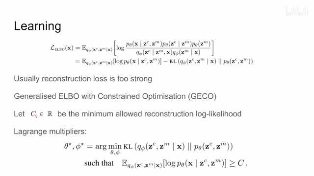
00:12:20–00:12:26 · 画面 02300:12:26–00:12:27 · 画面 024
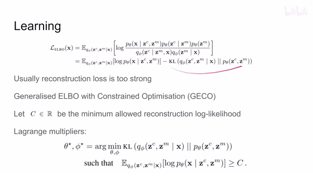
00:12:26–00:12:27 · 画面 02400:12:27–00:12:33 · 画面 025
00:12:27–00:12:33 · 画面 02500:12:33–00:12:34 · 画面 026
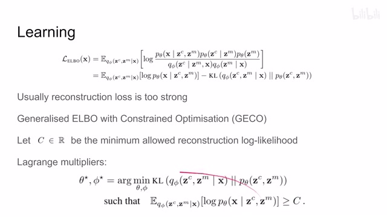
00:12:33–00:12:34 · 画面 02600:12:34–00:12:45 · 画面 027
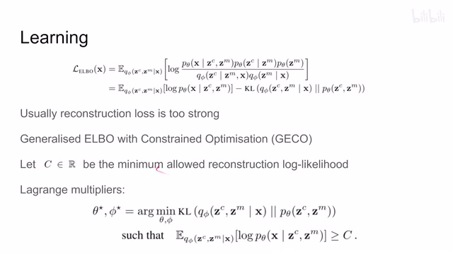
00:12:34–00:12:45 · 画面 027下面呢，我们就来看作者汇报的结果吧。那首先就是本文提倡了对吧，相对于这个 monet，相对于这个 IODINE，它的这个优势在于这个场景的这个生成，你可以看到它的第一个阶段生成了这个天空啊，还有这个背景啊，这个地面啊，然后后面呢，不断的去生成这个 object，还是挺有意思的一个演示效果呢也不错。那对比之下的这个 monet 呢，它就不太成样子。那么来看到这个 genesis s 呢
00:12:45–00:13:10 · 画面 028
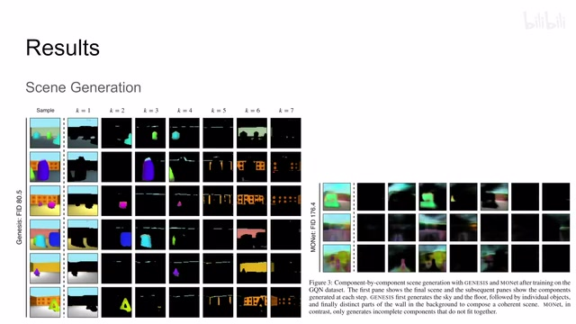
00:12:45–00:13:10 · 画面 02800:13:10–00:13:27 · 画面 029
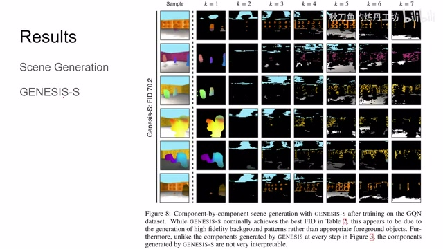
00:13:10–00:13:27 · 画面 029因为我们没有去区分 mass 和 object 他们的这个 latent，所以你看到他们的每一个循环生成的这个东西呢就不太符合我们的这个 object。所以说呢，这也说明了我们这个 mass 和我们这个 object 他们这个 latent 最好还是分开啊，不要做一个东西那么当然呢，这个结果里面也少不了这个 segmentation 啊，跟这个 monet 对一下。那么最后呢，是一些量化分析或怎么样衡量我们这个图像质量的好坏。那比如说，你可以用这个 FID 量一下距离，或者是你接一个下游的任务用这个下游的任务来判断。当然这里的这个 classification 呢，是用它的这个 latent 来做的是衡量这个 representation 的好坏，就像这个 linear probing 或者 fine-tuning 这种东西
00:13:27–00:13:32 · 画面 030
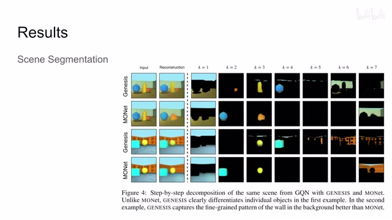
00:13:27–00:13:32 · 画面 03000:13:32–00:14:12 · 画面 031
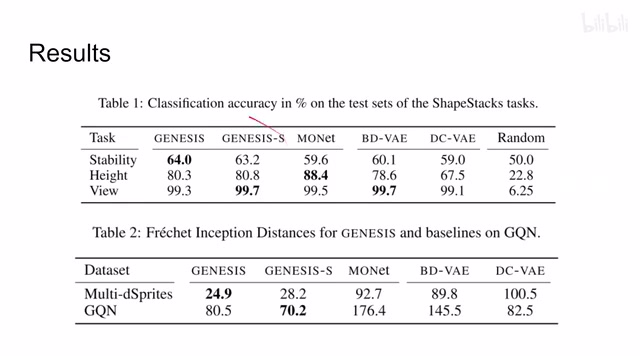
00:13:32–00:14:12 · 画面 031那当然我说的把生成的图像送到这个 classifier 里面也是常用的评价干生成图像质量的一个方法。好了，那么以上就是我对这篇论文的一个快速的一个介绍啊。那么还是他的一个附录里面汇报了大量的这个 Visualization，一些更多的样例和具体的实验细节，非常推荐感兴趣的朋友呢去查看原文。那么感谢您的收看，再见
00:14:12–00:14:13 · 画面 032
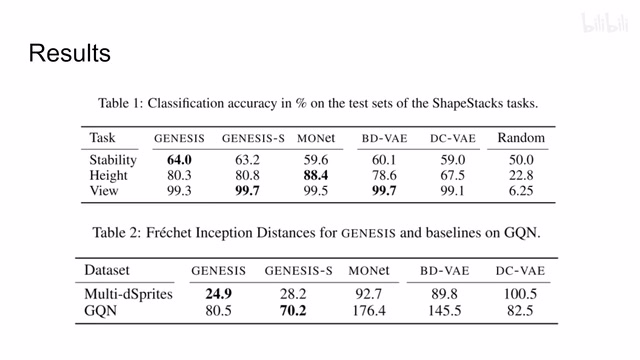
00:14:12–00:14:13 · 画面 032转写与来源说明 · 0 个自动复核提示
保留 34 个原始语音片段，0 个片段触发自动复核提示。提示仅用于定位可能的术语、重复或识别问题，不等于已确认错误。
讲解画面为源视频截图（640×360），不是可编辑 PPT 文件。全片按每秒 2 帧扫描内容变化，逐步展开页保留；连续动画保留代表画面。清晰度受源视频限制。
原视频：paper/合集_2026-10-16_表征学习/[论文简析]Generative Scene Inference and Sampling...[1907.13052].mp4
SHA-256：ee5c64ae3cb05d65b8564e6096de1aa3ff2c4099683abfd3c4b6c7f4f3312368
全文按视频语音与画面制作。原论文可从上方链接下载；完整资料包保留全文、原始逐字稿、字幕和校对记录。